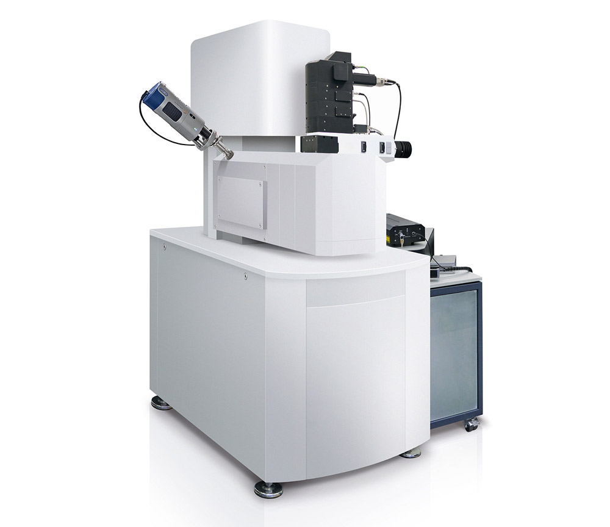
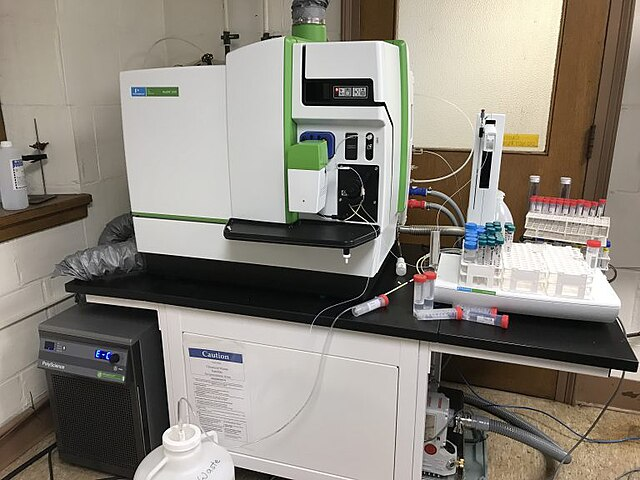
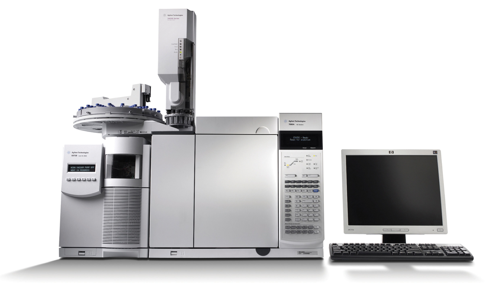

Virtual Tour
About The Laboratory
Laboratorium Riset Terpadu UPN “Veteran” Yogyakarta merupakan fasilitas riset unggulan yang dibangun untuk mendukung kegiatan penelitian lintas disiplin di lingkungan universitas. Pembangunan gedung ini dimulai pada tahun 2019 dan secara resmi diresmikan pada tanggal 28 Juni 2021. Gedung ini terdiri atas empat lantai dan satu rooftop, dengan luas bangunan mencapai kurang lebih 2.800 meter persegi.
Laboratorium ini dirancang sebagai pusat kolaborasi antara fakultas, pusat studi, dan mitra eksternal, baik dari dunia industri maupun lembaga pemerintah. Berlokasi di Kampus Condongcatur, Sleman, gedung ini menjadi simbol komitmen UPN “Veteran” Yogyakarta dalam memajukan riset, inovasi, dan pengembangan teknologi. Dilengkapi dengan fasilitas modern dan sistem manajemen laboratorium berbasis digital, Laboratorium Riset Terpadu berperan penting dalam mendukung kegiatan akademik, program Merdeka Belajar Kampus Merdeka (MBKM), serta pengembangan produk riset yang berdampak nyata bagi masyarakat.
Featured Highlights
Fasilitas Riset Terpadu
Pusat riset yang terintegrasi dengan peralatan canggih untuk mendukung kegiatan penelitian multidisiplin dalam satu tempat.
Teknologi Terkini
Akses ke berbagai perangkat digital mutakhir, sistem pemetaan 3D, alat penginderaan jauh, dan peralatan canggih lainnya untuk meningkatkan ketelitian dan inovasi penelitian.
Ekosistem Kolaborasi
Mendorong kolaborasi antara mahasiswa, dosen, dan peneliti lintas bidang guna menghasilkan proyek riset yang berdampak luas.
Ruang Seminar dan Diskusi Cerdas
Ruang seminar dan diskusi yang modern, dilengkapi sistem digital pintar, ideal untuk presentasi, lokakarya, dan forum ilmiah.
Dukungan untuk Inovasi dan Prototipe
Ruang dan peralatan khusus untuk pengembangan prototipe dan riset eksperimental, mendukung mahasiswa dan peneliti dalam mewujudkan ide menjadi solusi nyata.
Laboratory
Klasifikasi Laboratorium (Tipe IV)
Berdasarkan Permendikbud No. 15 Tahun 2014 tentang Jabatan Fungsional Pranata Laboratorium Pendidikan (PLP) dan Angka Kreditnya, laboratorium diklasifikasikan menjadi beberapa tipe berdasarkan jenis laboratorium, kedudukan, fungsi utama, serta kategori peralatan dan bahan yang digunakan.
Laboratorium Tipe I
Laboratorium tipe I merupakan laboratorium ilmu dasar yang ada di sekolah. Fungsi utamanya adalah praktikum. Peralatan yang digunakan terdiri dari Kategori I, Kategori II, dan Kategori III. Bahan yang digunakan meliputi bahan umum, bahan kimia, dan bahan khusus.
Laboratorium Tipe II
Laboratorium tipe II merupakan laboratorium bidang keilmuan yang ada di jurusan. Fungsi utamanya yaitu praktikum dan/atau penelitian tingkat dasar. Peralatan terdiri atas Kategori I, Kategori II, dan Kategori III. Bahan meliputi bahan umum dan bahan khusus.
Laboratorium Tipe III
Laboratorium tipe III merupakan laboratorium penelitian yang ada di jurusan/fakultas. Fungsi utamanya adalah penelitian dan/atau pengembangan ipteks. Peralatan mencakup Kategori I, Kategori II, dan Kategori III. Bahan terdiri dari bahan umum dan bahan khusus.
Laboratorium Tipe IV
Laboratorium tipe IV adalah laboratorium terpadu yang terdapat di pusat studi, fakultas, atau unit pelaksana teknis (UPT). Laboratorium ini menyelenggarakan pendidikan dan/atau pelatihan dengan fasilitas peralatan Kategori 1, 2, dan 3, serta bahan kategori umum dan khusus. Fungsinya adalah melayani kegiatan penelitian dan pengabdian kepada masyarakat, mahasiswa, serta dosen.
Sarana Peralatan
Kategori 1
Peralatan yang cara pengoperasian dan perawatannya mudah, risiko penggunaan rendah, akurasi atau kecermatan pengukurannya rendah, serta memiliki sistem kerja yang sederhana. Pengoperasiannya cukup dilakukan dengan menggunakan panduan.
Kategori 2
Peralatan yang cara pengoperasian dan perawatannya tergolong sedang, dengan sistem kerja yang tidak terlalu rumit. Pengoperasiannya memerlukan pelatihan khusus atau tertentu.
Kategori 3
Peralatan yang cara pengoperasian dan perawatannya sulit, memiliki risiko penggunaan tinggi, serta akurasi atau kecermatan pengukurannya tinggi. Sistem kerjanya rumit dan pengoperasiannya memerlukan pelatihan khusus atau sertifikasi.
Laboratorium Instrumentasi
Scanning Electron Microscope (SEM) Tipe JEOL JSM-IT510LV + EDS + OXFORD MLA
Alat yang digunakan untuk memperoleh gambar permukaan sampel dengan resolusi tinggi serta menganalisis komposisi kimia. Sementara Mineral Liberation Analysis (MLA) adalah teknik yang digunakan bersamaan dengan SEM untuk menganalisis mineral pada sampel. Dengan SEM, peneliti dapat mempelajari morfologi material, sementara MLA memungkinkan identifikasi unsur dari mineral penyusun. SEM dan MLA merupakan perangkat penting dalam geologi dan pertambangan untuk menganalisis komposisi serta proses geologi yang terlibat dalam pembentukan dan ekstraksi sumber daya mineral.
X-Ray Diffraction (XRD) Tipe Malvern Panalytical Empyrean Series 3
Teknik analisis cepat non-destruktif untuk mengidentifikasi sampel padat fase kristal dan memberikan informasi dimensi satu sel kristal (karakteristik material). Analisis XRD diaplikasikan untuk:
1. Bidang kimia: Menentukan struktur kristal dan karakteristik material.
2. Bidang geologi: Menentukan komposisi mineral dalam batuan.
3. Bidang farmasi: Mengidentifikasi bentuk polimorfik dan karakteristik nanopartikel.
.jpg)
X-Ray Fluorescence (XRF) Tipe Malvern Panalytical Zetium
Merupakan sebuah alat yang digunakan untuk menentukan kimia sampel dengan mengukur sinar-X fluoresensi (atau sekunder) yang dipancarkan dari sampel ketika dieksitasi oleh sumber sinar-X primer. Setiap elemen yang ada dalam sampel menghasilkan set karakteristik sinar-X fluoresensi yang unik untuk mengidentifikasi elemen tersebut. Spektroskopi XRF adalah teknik yang sangat baik untuk analisis kualitatif dan kuantitatif komposisi material. XRF digunakan untuk analisis kimia non-destruktif yang rutin terutama dalam penyelidikan logam, kaca, keramik, dan bahan bangunan, serta untuk analisis bidang geokimia, ilmu forensik, arkeologi, dan objek seni.

CHNS/O Analyzer Tipe FLASHSMART
Merupakan suatu alat untuk menganalisis kandungan karbon (C), hidrogen (H), nitrogen (N), belerang (S), dan oksigen (O) dalam suatu sampel atau material. Prinsip kerja alat ini adalah berdasarkan hasil pembakaran. Produk pembakaran sampel akan dianalisis oleh detektor sehingga dapat diketahui rasio (perbandingan) tiap unsur CHNS/O dalam sampel. Analisis CHNS/O umumnya digunakan dalam bidang energi, petrokimia, lingkungan hidup, pertanian, farmasi, dan lain sebagainya.

ICP-MS Tipe Thermo Scientific Icap RQ
Inductively Coupled Plasma–Mass Spectrofotometry (ICP-MS) adalah teknik analisis yang digunakan untuk penentuan kadar logam multi-unsur yang menggunakan sumber plasma untuk atomisasi dalam sampel. Analisis ICP-MS sangat diperlukan dalam bidang aplikasi, antara lain:
1. Bahan alami: batuan, mineral, tanah, air, sedimen, dan jaringan hewan.
2. Bidang geokimia, mineralogi, pertanian, kehutanan, perikanan, kesehatan, dan industri makanan.
3. Ilmu lingkungan: distribusi dan siklus unsur di ekosistem.
Dapat mendeteksi unsur dalam konsentrasi sangat rendah seperti Sulfur, Boron, Fosfor, Titanium, dan Zirkonium.
Surface Area Analyzer (SAA) Tipe Quantachrome NOVA 1200e
Surface Area Analyzer berfungsi untuk menentukan luas permukaan material, distribusi pori dari material, dan isoterm adsorpsi suatu gas pada suatu bahan. Analisis SAA sangat diperlukan dalam bidang aplikasi, antara lain:
1. Lingkungan: analisis luas permukaan adsorben limbah.
2. Bidang kimia.

Bomb Calorimeter Tipe IKA C8000 ISOPERIBOL
Bomb Calorimeter merupakan alat uji nilai kalor suatu bahan/material, baik dalam wujud padat maupun cair. Prinsip kerja alat ini adalah dengan mengukur perubahan suhu selama reaksi kimia (pembakaran) berlangsung. Pengujian menggunakan Bomb Calorimeter umumnya dilakukan pada bahan bakar seperti batubara dan minyak untuk menentukan kualitas berdasarkan kalori tiap bahan bakar. Selain itu, pengujian ini juga sebagai bentuk pengendalian mutu (Quality Control) suatu bahan bakar.

STA Tipe STA N-650/1000/1500
Simultaneous Thermal Analyzer (STA) adalah teknik analisis termal simultan yang didasarkan pada pengukuran variasi massa sampel material yang dikarakterisasi dan perbedaan suhu antara sampel material dan referensi inert. Aplikasi spesifik Simultaneous Thermal Analyzer:
1. Suhu transisi gelas/polimer
2. Transisi fasa polimorfik
3. Karakteristik material
4. Penentuan diagram fasa
5. Jalur dekomposisi
6. Kinetik
7. Entalpi dan kapasitas panas

RT-PCR Tipe ARIA-MX
RT-PCR (Real-Time Polymerase Chain Reaction) adalah teknik yang digunakan untuk mengamplifikasi DNA target dari suatu organisme yang bertujuan untuk mengetahui kuantitas DNA target. Instrumen Real-Time PCR bekerja berdasarkan prinsip PCR. Namun berbeda dengan PCR konvensional, dengan RT-PCR kita dapat mengamati proses penggandaan DNA target secara real-time dari satu PCR ke siklus selanjutnya tanpa perlu melakukan elektroforesis (agarose) untuk melihat hasilnya.

GCMS Tipe Thermo Scientific ISQ 7000
Gas Chromatography and Mass Spectrometry (GCMS) merupakan gabungan dari alat GC dan MS. Sampel yang dianalisis akan dipisahkan dahulu dengan alat GC (Gas Chromatography), kemudian diidentifikasi oleh alat MS (Mass Spectrometry). GC-MS digunakan untuk identifikasi kualitatif dan pengukuran kuantitatif dari komponen individual dalam senyawa campuran kompleks yang mudah menguap (volatil).
HPLC Tipe Thermo Scientific ULTIMATE 3000
High Performance Liquid Chromatography (HPLC) digunakan untuk menentukan atau memisahkan atau menganalisis kadar bahan aktif pada suatu sampel (obat, makanan, atau herbal). Merupakan salah satu teknik kromatografi untuk zat cair yang dijalankan dengan tekanan tinggi. Aplikasi utama HPLC antara lain:
1. Bioteknologi
2. Industri Hayati
3. Industri Farmasi
.jpg)
UTM Tipe JCM 3000
Universal Testing Machine (UTM) merupakan alat uji untuk mengukur tingkat ketahanan, kekuatan tarik suatu bahan atau material. Alat ini digunakan untuk melakukan berbagai pengujian material menggunakan metode uji tekan (compression) maupun uji tarik (tensile). Umumnya digunakan untuk uji logam, besi, dan bahan bangunan, serta diaplikasikan pada industri pertambangan, perminyakan, dan lainnya.
.jpg)
Dynamic Linear Swell Meter Tipe OFITE 009
Swell Meter adalah alat yang digunakan dalam industri minyak dan gas untuk mengukur perubahan volume batuan pada saat terinjeksi cairan. Alat ini berguna untuk memahami perilaku batuan terhadap fluida selama proses produksi minyak atau injeksi fluida ke dalamnya. Dengan mengukur perubahan volume batuan, Swell Meter membantu dalam pengoptimalan produksi minyak dan gas serta mengukur efektivitas metode injeksi fluida.

Magnetic Barrier Separator Tipe Frantz Model LB-1
Magnetic Barrier Separator merupakan alat yang digunakan untuk sistem konsentrasi atau pemisahan antar mineral dengan memanfaatkan perbedaan sifat magnetik suatu mineral secara selektif. Pemisahan ini memanfaatkan medan magnet yang dihasilkan oleh elektromagnet. Metode ini banyak digunakan dalam ilmu kebumian untuk mengekskstraksi mineral bijih, memisahkan fraksi batuan, serta analisis geokimia batuan beku dan metamorf.

Spektrofotometer UV-Vis Tipe PG Instruments T80+
Spektrofotometer UV-Vis adalah alat pengukur serapan cahaya di daerah ultraviolet (200–350 nm) dan sinar tampak (350–800 nm) oleh suatu senyawa. Larutan yang dianalisis diukur serapan sinar ultra violetnya atau sinar tampaknya. Konsentrasi larutan yang dianalisis akan sebanding dengan jumlah sinar yang diserap oleh zat yang terdapat dalam larutan tersebut.

Mercury Analyzer Tipe AULA–254 GOLD
Mercury Analyzer merupakan alat yang digunakan untuk menganalisis merkuri secara cepat, dengan sensitivitas tinggi, dan dapat menentukan jumlah merkuri pada sampel padat, cair, dan gas. Alat ini digunakan untuk mengukur kadar merkuri di dalam air limbah, makanan, urin, sampel geologi, dan mineralogi. Metode yang digunakan dalam mercury analyzer adalah analisis aliran kontinu (CFA).

Microwave Digestion Tipe BERGHOF Speedwave XPERT/XTRACT
Microwave Digestion digunakan untuk mendestruksi (preparasi) sampel uji dengan metode destruksi asam/basa menggunakan bantuan gelombang mikro.


Alur Proses Pengujian Sampel Laboratorium Terpadu
1. Asal Sampel
Tahap awal berasal dari berbagai sumber sampel seperti padatan, cairan, larutan, maupun gas yang akan dianalisis sesuai kebutuhan pengujian.
2. Pelanggan
Pelanggan membawa sampel ke laboratorium untuk dilakukan proses analisis sesuai dengan jenis dan parameter pengujian yang diinginkan.
3. Penerimaan Sampel
Petugas laboratorium menerima sampel yang diajukan oleh pelanggan dan melakukan pemeriksaan kelengkapan data serta kondisi sampel. Jika belum lengkap, sampel dikembalikan untuk dilengkapi.
4. Pendaftaran Pengujian
Setelah sampel dinyatakan lengkap, dilakukan pendaftaran pengujian untuk menentukan jenis analisis yang akan dilakukan. Jika tidak sesuai, maka dibuat berita acara analisis.
5. Penanganan Sampel
Sampel yang sudah terdaftar ditangani sesuai dengan standar prosedur operasional (SOP) agar kualitas dan akurasi data tetap terjaga sebelum dilakukan pengujian.
6. Pelaksanaan Pengujian
Pengujian dilakukan oleh analis laboratorium menggunakan peralatan dan metode yang sesuai dengan standar agar hasil analisis valid dan dapat dipertanggungjawabkan.
7. Hasil Uji
Hasil uji kemudian dianalisis dan dicatat untuk memastikan keakuratan dan konsistensi data. Data ini menjadi dasar dalam penyusunan laporan hasil analisis.
8. Bendahara Penerimaan
Setelah pengujian selesai, pelanggan melakukan pembayaran biaya analisis melalui bendahara penerimaan sebelum hasil akhir diterbitkan.
9. Admin Lab Terpadu
Admin Laboratorium Terpadu menyusun dan menyerahkan laporan hasil analisis kepada pelanggan sebagai tahap akhir dari proses pelayanan.
Pelayanan Pengujian Laboratorium
Berikut merupakan daftar layanan uji yang tersedia di laboratorium, lengkap dengan tautan formulir pendaftaran untuk masing-masing jenis pengujian.
- Uji SAA/BET : https://forms.gle/7raAoAfxXZzMr4oR8
- Uji GC Ms : https://forms.gle/kaXssJHivBSWeYuQ8
- Uji Nilai Kalor (Bomb Cal) : https://forms.gle/naSxumh1eFFZpbpZA
- Uji HP LC : https://forms.gle/Ef7zyewooefSgdUJ7
- Uji ICP-MS : https://forms.gle/ZgTZehfdUPycC6Je7
- Uji CHNSO : https://forms.gle/C7JyHzjhdOF9ZKj6
- Uji SEM-MLA : https://forms.gle/2w4RAPa6M8bRbdnT9
- Uji Linear Swelling Meter : https://forms.gle/Yd4vNeZ4AWoesGcy7
- Uji Mercury Analyzer : https://forms.gle/jgi2uViK1QHav2S7d
- Uji STA : https://forms.gle/CsnsuooqXszTULSj9
- Uji XRD : https://forms.gle/xYondbnDqk4Sdk9R6
- Uji XRF : https://forms.gle/svDyGL5BUN89gi1YA
- Spektrofotometer UV-VIS (Shimadzu UV-1280) : https://forms.gle/WvJAdDmdvBnsQj5GA
- Furnace (Nabertherm, LT 5/11/B410 Muffle Furnace) : https://forms.gle/WvJAdDmdvBnsQj5GA
- Uji Umum Lainnya : https://forms.gle/Dth3WufkkJk8xjna9
Rute ke Laboratorium Riset Terpadu
Contact Us
Phone
Address
Jalan Ringroad Utara, Condongcatur, Depok, Sleman, Yogyakarta, Indonesia